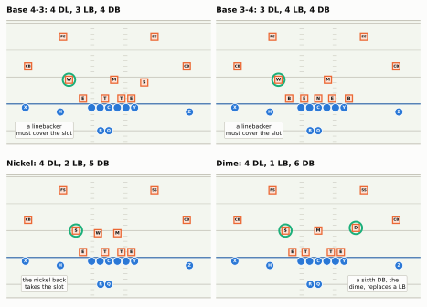
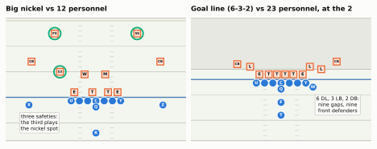
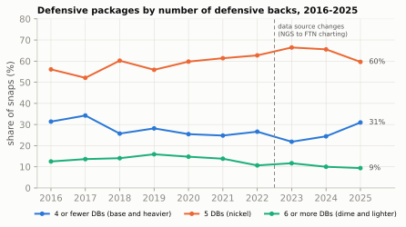
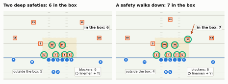
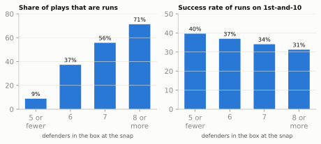
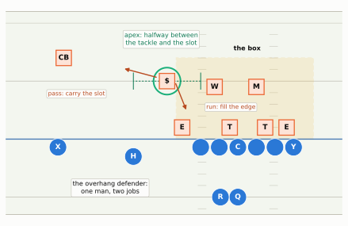
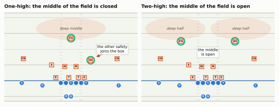
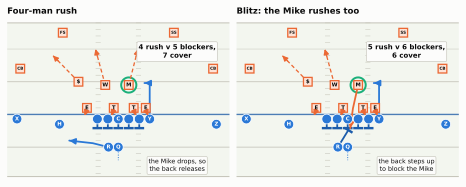
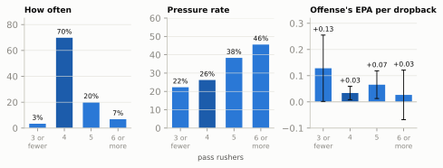
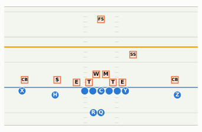

Packages, the box, man and zone, one-high and two-high, and the blitz: the five things to read about a defense before the snap, and why each one exists.
Show the Python (shared drawing helpers for this chapter)
import osimport reimport loggingimport numpy as npimport pandas as pdimport matplotlib.pyplot as pltfrom matplotlib import animationfrom matplotlib.patches import Rectangle, FancyArrowPatchfrom gridiron import Play, Player, Field, offense, technique, style, draw_markerfrom gridiron import routes as rlogging.getLogger("matplotlib.font_manager").setLevel(logging.ERROR)style.apply()PDF = os.environ.get("RTG_FORMAT", "").lower() in ("pdf", "typst", "print")GREEN_TEXT ="#0f7a55"# darker step of the green highlight, for text on the light fielddef D(key, pos, d, w, label):"""One defender, with the label we want printed on his marker."""return Player(key, pos, "def", d, w, label=label)def off_11():"""11 personnel from the shotgun, the chapter's standard offense: tight end attached on the right (Y), Z wide right a step off the ball, a slot receiver (H) and the X receiver on the left, the back beside the quarterback. Seven on the line: five linemen, Y and X.""" out = []for p in offense("gun_2x2"):if p.key =="Y": p = p.moved(d=-0.7, w=4.8)elif p.key =="Z": p = p.moved(d=-1.5, w=15.0)elif p.key =="H": p = p.moved(d=-1.5, w=-9.0)elif p.key =="X": p = p.moved(d=-0.7, w=-15.5) out.append(p)return outdef corners(d=7.0, wl=-15.0, wr=14.5):return [D("LCB", "CB", d, wl, "CB"), D("RCB", "CB", d, wr, "CB")]def two_high(d=12.5, w=8.5):return [D("FS", "FS", d, -w, "FS"), D("SS", "SS", d, w, "SS")]def one_high(fs=(13.5, 0.0), ss=(6.5, 6.2)):return [D("FS", "FS", *fs, "FS"), D("SS", "SS", *ss, "SS")]def four_down():"""Four linemen against a tight end on the right: an end on the tight end's inside shoulder, a tackle on the right guard's outside shoulder, a tackle shaded on the center, and an end a little wide of the left tackle (the numbering system for these spots comes in 03-01)."""return [D("SDE", "DE", 1.0, technique("7"), "E"), D("SDT", "DT", 1.0, technique("3"), "T"), D("WDT", "DT", 1.0, technique("1", -1), "T"), D("WDE", "DE", 1.0, technique("5", -1) -0.8, "E")]def nickel_d(shell="two_high"):"""4-2-5 nickel: four down, two linebackers, the nickel back ($) apexed over the slot.""" sec = two_high() if shell =="two_high"else one_high()return four_down() + [D("MIKE", "MIKE", 4.5, 1.6, "M"), D("WILL", "WILL", 4.5, -2.0, "W"), D("NB", "NB", 5.0, -6.1, "$")] + corners() + secdef no_numbers(ax):"""Remove the painted yard-line numbers (they sit where receivers and safeties stand)."""for t inlist(ax.texts):if t.get_alpha() ==0.55: t.remove()def draw(p, ax=None, lateral=(-20, 20), window=(-7.5, 16), width_in=6.5, title=False): fld = p.draw(ax=ax, lateral=lateral, window=window, width_in=width_in, title=title) no_numbers(fld.ax)return flddef P(fld, p, d, w):return fld.xy(*p.to_abs(d, w))def say(fld, p, d, w, text, color=style.INK, fontsize=7.5, box=True, weight="normal"):"""A free text label centred at (d, w) yards.""" x, y = P(fld, p, d, w) kw =dict(bbox=dict(boxstyle="round,pad=0.22", fc=style.SURFACE, ec=style.BASELINE, lw=0.6)) if box else {} fld.ax.text(x, y, text, ha="center", va="center", fontsize=fontsize, color=color, zorder=12, fontweight=weight, **kw)def arrow(fld, p, pts, color=style.DEFENSE, lw=1.6, dash=(0, (3, 2)), zorder=6):"""An arrow through (d, w) points (dashed by default: a possible movement, not a drawn path).""" xs, ys = P(fld, p, np.array([q[0] for q in pts]), np.array([q[1] for q in pts])) fld.ax.plot(xs[:-1], ys[:-1], color=color, lw=lw, ls=dash, zorder=zorder) fld.ax.add_patch(FancyArrowPatch((xs[-2], ys[-2]), (xs[-1], ys[-1]), arrowstyle="-|>", mutation_scale=10, color=color, lw=lw, zorder=zorder))def box_rect(fld, p, w_lo, w_hi, d_hi=7.0, d_lo=0.0):"""Shade the box: from w_lo to w_hi across, d_lo to d_hi yards deep.""" (x0, y0), (x1, y1) = P(fld, p, d_lo, w_lo), P(fld, p, d_hi, w_hi) fld.ax.add_patch(Rectangle((min(x0, x1), min(y0, y1)), abs(x1 - x0), abs(y1 - y0), facecolor=style.LINE_TO_GAIN, alpha=0.12, edgecolor=style.LINE_TO_GAIN, lw=1.4, ls=(0, (4, 2)), zorder=1.5))def in_box(p, w_lo, w_hi, d_hi=7.0):"""Keys of the defenders standing inside the box."""return [k for k, q in p.players.items() if q.side =="def"and w_lo <= q.w <= w_hi and0< q.d <= d_hi]def panel_title(ax, text, size=8.5): ax.set_title(text, fontsize=size, loc="left", color=style.INK, fontweight="bold")
Second-and-7, early in the second quarter. The offense jogs out of the huddle with three wide receivers, and before the quarterback has his hands under the center the analyst has already said three things: “They stay in their nickel. Six in the box. Two high.” Then the ball is snapped, a linebacker who looked like he was going to rush the passer turns and runs backward, and the quarterback throws the ball away. “They showed blitz and dropped out of it.” To a casual fan that is a stream of jargon. To the analyst it is a quick inventory: who the defense sent onto the field, how many of them are waiting for a run, how many are guarding the deep part of the field, and how many came after the quarterback. That inventory is what this chapter teaches. It is a first look, deliberately shallow, so the chapters on the run and pass games can talk about defenders by name. The full treatment of each idea comes later: fronts in Part 5, coverages in Part 6, pressure in Part 7.
You’ll be able to…
Name the common defensive packages (base 4-3 and 3-4, nickel, dime, quarter, big nickel, goal line), say which offensive personnel each one is meant to meet, and explain where “nickel” and “dime” got their names.
Count the box on a broadcast, compare it with the offense’s blockers, and say whether the numbers favor a run; point out the apex or overhang defender who stands between the box and a slot receiver.
Say what man and zone coverage are, and what each is good at and bad at.
Tell a one-high shell from a two-high shell before the snap, and say what each protects and what it gives away.
Count rushers after the snap and call a four-man rush or a blitz.
Explain why nickel, not the 4-3 or the 3-4, is the modern NFL’s real base defense, and why that changed a little in 2025.
The defense’s problem: eleven players against a play it hasn’t seen
Start with the asymmetry. The offense knows what it is going to do. Its play-caller chose a play, the quarterback told ten teammates, and every one of them knows where the ball is supposed to go (What a Play Really Is). The defense does not. Its coordinator called his own play at the same moment, blind, and everything after that is reaction. A defense is eleven people trying to be ready for a run in either direction, a short pass, a long pass and a quarterback scramble, all at once, without knowing which.
They cannot be ready for everything equally, because there are only eleven of them. Every defender placed near the ball to stop a run is a defender not standing 15 yards deep to stop a long pass. Every defender sent after the quarterback is one fewer covering a receiver. So a defensive call is a set of bets about where to spend eleven players, and almost everything you can read about a defense is a clue to how those players were spent. This chapter breaks the spending into five questions, in the order you can answer them on a broadcast (the sections teach them in a slightly different order, because man and zone has to come before the safeties make sense):
Who is on the field? The package: how many big run-stoppers, how many fast pass defenders. You can answer it as players run on.
How many are near the ball? The box count, compared with the offense’s blockers.
Who is stuck in between? The apex or overhang defender, half run-stopper, half pass defender.
How many safeties are deep? One or two: the shell, the best pre-snap hint about the coverage.
After the snap: how many rush, and how do the rest cover? Four rushers or five and more (a blitz); man or zone behind them.
A real defensive call names the plan in a few words: one for the front (where the linemen and linebackers line up, taught in Part 5 starting with Defensive Line Play), one for the coverage (how the players behind them split up the receivers; Part 6), and sometimes a pressure (who rushes; Part 7). The package is usually settled a few seconds earlier, as players run on and off, and the call then assumes it.
Packages: who comes onto the field
A defensive package is the group of eleven defenders on the field for a given snap. Football players are specialists: a 320-pound defensive tackle and a 190-pound cornerback are both “defense,” but they are built for opposite jobs (The Twenty-Two walks through every position). A package is the defense’s choice of how many of each body type to use, and teams name packages mostly by counting one group: the defensive backs (DBs), the cornerbacks and safeties of the secondary. Linemen and linebackers make up the rest, and since there are always eleven, more DBs means fewer big players.
Base: the 4-3 and the 3-4
A base defense is the traditional starting package: four defensive backs and seven bigger players in the front seven. There are two classic ways to split those seven, and their names are simply the counts:
The 4-3: four defensive linemen and three linebackers (the Sam, Mike and Will of The Twenty-Two).
The 3-4: three defensive linemen and four linebackers. The two outside linebackers often stand on the line of scrimmage, at the ends of the line, and on most pass plays they rush the quarterback like defensive ends.
Both were built for an older offense, one with two running backs or two tight ends, where the main threat was a run and the third wide receiver did not exist. The 4-3 became the NFL’s standard in the late 1950s; it is usually credited to Tom Landry, the New York Giants’ defensive coach (what we would now call the coordinator), who made it the Giants’ base defense in 1956, and after the Giants won the championship that year much of the league copied it.1 The 3-4 grew out of the college “Oklahoma 5-2” of Bud Wilkinson, a front with five linemen and two linebackers behind them. Count it and you can see the family resemblance: stand the 5-2’s two end men up off the ground, call them linebackers, and the same seven players are three linemen and four linebackers. In the NFL, Chuck Fairbanks’s 1974 New England Patriots are usually named as the first team to play the 3-4 regularly, and it was the league’s dominant base defense around 1980.2
For a first look, the difference that matters is smaller than the names suggest. In both, the defense usually rushes four players on a pass (the 3-4’s fourth rusher is an outside linebacker standing up instead of a lineman with his hand on the ground), and both put seven players near the ball against the run. The labels have blurred, too: most NFL defenses now line up in both kinds of front, sometimes in the same game (“now every team is ‘multiple,’” as one analyst put it more than a decade ago),3 so calling a team “a 3-4 team” today mostly tells you what bodies it drafts: stand-up edge rushers rather than four big linemen. What really separates the fronts, which linemen take on which blockers and who is responsible for which gap, is the subject of Even Fronts and Odd and Hybrid Fronts, and Appendix C has a one-page comparison card. For now: the digits count linemen and linebackers, and the base package always has four defensive backs.
CautionCommon misconception
“A 3-4 defense rushes three.” Almost never on a passing down. The 3-4’s outside linebackers are usually its best edge rushers (The Twenty-Two), so a 3-4 team usually rushes four. In its base package, that is the three linemen and one outside linebacker. On passing downs the nose tackle usually comes off for a nickel back, and the four rushers are the two remaining linemen and both outside linebackers: that is the 2-4-5 nickel you will see in the table below.4 (A lineman dropping into coverage while a linebacker rushes in his place is a deliberate disguise, which comes up at the end of this chapter.) The labels describe how the defense lines up, not how many come after the quarterback. Count rushers after the snap instead.
Nickel and dime: taking linebackers off the field
The trouble with base defense starts with the third wide receiver. Against an offense with three receivers, a base defense has four DBs for three receivers plus a tight end and a back who can also run routes. Someone from the front seven, usually a linebacker, has to line up across from the third receiver, the one in the slot (the gap between the offensive line and a wide receiver). That linebacker might weigh 240 pounds; the slot receiver might run the 40-yard dash a few tenths of a second faster. That is a mismatch the offense will find on every snap.
The answer is a substitution. Take a linebacker off the field and send in a fifth defensive back. That package is the nickel, and the fifth DB, usually a cornerback who specializes in covering slot receivers, is the nickel back or slot cornerback. Take out a second linebacker for a sixth DB and you have the dime. The names are coins: a nickel is five cents, so the fifth DB is “the nickel,” and a dime is two nickels, so the sixth is “the dime.”
Which linebacker comes off? Usually the Sam. He is the biggest of the three, built to take on a tight end at the line, and the weakest in coverage (The Twenty-Two). The Will, lighter and faster, stays on, and since the nickel back now has the slot, the Will slides back inside to play beside the Mike. Watch for that in the figure below: the ringed linebacker in the base panels is stranded out toward the slot; in the nickel panel a defensive back has his job and both linebackers are back in the middle.
You won’t always catch the substitution, and jersey numbers no longer settle who is who (most positions can now wear most numbers; see The Twenty-Two). The quickest check is the second row, the players standing 4 or 5 yards off the ball. Base has three linebackers there, though against three receivers one may have walked out toward the slot, as in the figure below; nickel has two inside, and the player out over the slot is visibly smaller; dime has one.
Show the Python
def base_43():return four_down() + [D("SAM", "SAM", 4.0, 6.6, "S"), D("MIKE", "MIKE", 4.5, 1.0, "M"), D("WILL", "WILL", 4.5, -7.4, "W")] + corners() + two_high()def base_34():"""Three linemen (two ends on the tackles' inside shoulders, a nose on the center), two outside linebackers standing up on the edges, two inside linebackers. Against three receivers the weak-side inside linebacker has to widen toward the slot."""return [D("LDE", "DE", 1.0, technique("4i", -1), "E"), D("NT", "NT", 1.0, 0.0, "N"), D("RDE", "DE", 1.0, technique("4i"), "E"), D("ROLB", "OLB", 1.0, technique("9"), "B"), D("LOLB", "OLB", 1.0, technique("5", -1) -1.4, "B"), D("MIKE", "ILB", 4.5, 1.8, "M"), D("WILL", "ILB", 4.5, -7.4, "W")] + corners() + two_high()def dime_d():return [D("SDE", "DE", 1.0, technique("7"), "E"), D("SDT", "DT", 1.0, technique("3"), "T"), D("WDT", "DT", 1.0, technique("3", -1), "T"), D("WDE", "DE", 1.0, technique("5", -1) -0.8, "E"), D("MIKE", "MIKE", 5.0, 0.0, "M"), D("NB", "NB", 5.0, -6.1, "$"), D("DM", "DB", 5.5, 7.0, "D")] \+ corners() + two_high()panels = [ ("Base 4-3: 4 DL, 3 LB, 4 DB", base_43(), ["WILL"], "a linebacker\nmust cover the slot", (-4.9, -12.0)), ("Base 3-4: 3 DL, 4 LB, 4 DB", base_34(), ["WILL"], "a linebacker\nmust cover the slot", (-4.9, -12.0)), ("Nickel: 4 DL, 2 LB, 5 DB", nickel_d(), ["NB"], "the nickel back\ntakes the slot", (-4.9, -12.0)), ("Dime: 4 DL, 1 LB, 6 DB", dime_d(), ["NB", "DM"], "a sixth DB, the\ndime, replaces a LB", (-4.9, 11.0)),]fig, axes = plt.subplots(2, 2, figsize=(6.6, 5.0))for ax, (ttl, dfn, ring, txt, at) inzip(axes.flat, panels): p = Play(off_11(), dfn, los=35, to_go=None) p.highlight(*ring) fld = draw(p, ax=ax, lateral=(-18.5, 18.5), window=(-7.5, 15.5)) say(fld, p, *at, txt, fontsize=6.3) panel_title(ax, ttl)fig.tight_layout(h_pad=0.8, w_pad=0.5)plt.show()

Figure 13.1: The same offense (11 personnel: one back, one tight end, three wide receivers) against four packages. In both base defenses (top) the four defensive backs are already spent on the two outside receivers and the two deep safeties, so a linebacker (ringed, the Will) has to walk out toward the slot receiver, H. Nickel (bottom left) takes a linebacker off, usually the Sam, and sends in a fifth defensive back ($, the nickel back) to take the slot; the Will slides back inside beside the Mike. Dime (bottom right) replaces a second linebacker with a sixth (D, the dime back), leaving one linebacker (M). Labels: E = defensive end, T = defensive tackle, N = nose tackle, B = outside linebacker standing on the line, S/M/W = Sam, Mike and Will linebackers, CB = cornerback, FS/SS = safeties.
The idea is older than most fans assume. The usual account credits Jerry Williams, a Philadelphia Eagles assistant, with putting a fifth defensive back on the field around 1960, and George Allen, then a Chicago Bears assistant, with giving it the name “nickel” (and, by some accounts, with taking the credit). Don Shula and his defensive coordinator Bill Arnsparger made nickel and dime packages a routine part of the Miami Dolphins’ defense in the 1970s.5 As with most “who invented it” stories in football, treat the details as contested; the coin joke has outlived everyone’s claim to it.
The packages keep going in both directions. A table is the quickest way to hold them:
Table 13.1: Defensive packages from heaviest to lightest. Personnel numbers (21, 12, 11) are the offense’s backs-then-tight-ends code from Personnel; the DL-LB splits vary by team.
Package
Typical make-up (DL-LB-DB)
Usually meets
What it is for
Goal line
6-3-2 or 5-3-3
23 (two backs, three tight ends) or jumbo, inside the 3
Fill every gap
Base 4-3 / 3-4
4-3-4 / 3-4-4
21, 12, 22 personnel
Stop the run, cover a tight end
Big nickel
4-2-5, three safeties
12, or 11 with a big tight end
Nickel speed, base size
Nickel
4-2-5 (or 3-3-5, 2-4-5)
11 personnel
Three receivers: the default
Dime
4-1-6 (or 3-2-6)
10, empty, third-and-long
Four or five receivers
Quarter (dollar)
3-1-7 or 4-0-7
Last-play heaves
Nothing gets behind anyone
The quarter package adds a seventh DB: four quarters in a dollar, and some staffs do call it the dollar, though the coin names get loose at this end of the scale and teams use them differently. You will see seven DBs mostly on the last play of a half, when the offense is about to throw the ball as high and far as it can.
At the other end, the goal-line package is all size: six or more linemen, three linebackers and as few as two DBs, for the snap when the offense needs one or two yards and everybody in the stadium knows it may run (how those snaps are defended is the goal-line defense of Part 10). And in between sits a modern hybrid, the big nickel: a nickel whose fifth defensive back is a third safety rather than a cornerback. Safeties are usually bigger and better tacklers than corners, so a big nickel can stay on the field against a two-tight-end offense without getting pushed around, and still cover like a nickel if the offense throws.
Show the Python
def off_12():"""12 personnel, under center: tight ends in-line on both sides (Y right, U left), both receivers off the ball (seven on the line: five linemen and two tight ends)."""return [q.moved(w=-13.0) if q.key =="X"else (q.moved(w=13.0) if q.key =="Z"else q)for q in offense("ace")]def big_nickel():return [D("SDE", "DE", 1.0, technique("7"), "E"), D("SDT", "DT", 1.0, technique("3"), "T"), D("WDT", "DT", 1.0, technique("1", -1), "T"), D("WDE", "DE", 1.0, -technique("7"), "E"), D("MIKE", "MIKE", 4.5, 1.8, "M"), D("WILL", "WILL", 4.5, -2.2, "W"), D("BN", "S", 5.0, -7.0, "S3"), D("LCB", "CB", 7.0, -12.5, "CB"), D("RCB", "CB", 7.0, 12.5, "CB")] + two_high(12.5, 8.0)def goal_line_d():"""A gap-sound 6-3-2 goal-line package against 23 personnel with a wing to the right: linemen in both A gaps, both B gaps and both C gaps (the ends on the tight ends' inside shoulders), and the three linebackers in the remaining gaps outside the tight ends and the wing.""" dl = [(-4.2, "E"), (-2.4, "T"), (-0.8, "T"), (0.8, "T"), (2.4, "T"), (4.2, "E")]return ([D(f"DL{i}", "DT", 1.0, w, lab) for i, (w, lab) inenumerate(dl)]+ [D("LB1", "LB", 2.5, -6.0, "L"), D("LB2", "LB", 2.5, 5.6, "L"), D("LB3", "LB", 2.0, 7.8, "L")]+ [D("LCB", "CB", 3.0, -8.5, "CB"), D("RCB", "CB", 3.5, 10.8, "CB")])fig, axes = plt.subplots(1, 2, figsize=(6.6, 3.1))p = Play(off_12(), big_nickel(), los=35, to_go=None)p.highlight("BN", "FS", "SS")fld = draw(p, ax=axes[0], lateral=(-17, 17), window=(-8.5, 15.5))say(fld, p, -5.0, -11.0, "three safeties:\nthe third plays\nthe nickel spot", fontsize=6.3)panel_title(axes[0], "Big nickel vs 12 personnel")p = Play(offense("goal_line"), goal_line_d(), los=108, to_go=None)fld = draw(p, ax=axes[1], lateral=(-17, 17), window=(-12.0, 12.0))say(fld, p, -5.0, 11.0, "6 DL, 3 LB, 2 DB:\nnine gaps, nine\nfront defenders", fontsize=6.3)panel_title(axes[1], "Goal line (6-3-2) vs 23 personnel, at the 2")fig.tight_layout(w_pad=0.6)plt.show()

Figure 13.2: Two packages for bigger offenses. Left: big nickel against 12 personnel (two tight ends: Y and U, the letter many playbooks give the second tight end). It is still a five-defensive-back package, but the fifth is a third safety (S3, ringed with the two deep safeties), here walked down outside the left tight end where a linebacker would stand in base; on the right side, outside Y, the strong safety fills the edge after the snap. Right: a 6-3-2 goal-line package against 23 personnel (two backs and three tight ends, one of them, W, off the line as a wing) at the 2-yard line. The six linemen sit in the gaps between and beside the offensive linemen, the two ends on the tight ends’ inside shoulders; the three linebackers (L) stand outside the tight ends and the wing. Nine gaps, nine defenders, plus two cornerbacks. The grey area is the end zone; the offense’s fullback (F) and tailback (T) are stacked behind the quarterback.
Why packages exist: the defense gets to answer the substitution
Why not just pick the best eleven and leave them out there? You met the mechanics in Personnel: the offense picks its personnel first, and when it substitutes the defense gets time to answer (substitution matching). What that chapter left for this one is what each answer costs.
Every package is a trade of size for speed. Nickel covers three receivers well and is one linebacker lighter against a run. Dime covers the field and is easy to run on. Goal line stuffs the middle and has almost nobody to cover a pass. Offenses know it, which is why personnel is a weapon: line up with players who can both block and catch (a tight end who runs like a receiver, a fullback who catches passes), and the defense has to choose which weakness to accept. That tug of war is the thread of this whole course.
NoteMadden vs. real life
In Madden you pick “Nickel 2-4-5” from a menu, and the package, the alignment and the coverage arrive together. In a real game they are settled at different moments, often by different people. The package is a substitution, made in the few seconds after the offense’s players run on, often relayed from the sideline before anything else. The front and coverage come in the defensive play call, through the one defender with a helmet radio (the green dot); some teams start the call with the package word, so the call can carry it too. And the offense can still undo some of it: an offense that hurries to the line without substituting can freeze the defense in a package it would rather not be in. You will meet that tactic in In-Game Adjustments and Tempo.
Why nickel is the modern base defense
Personnel told the offense’s side of this story; here is the defense’s. The twist is that “base defense” has become a slightly misleading phrase. In today’s NFL the base package is not the one teams use most. Offenses play 11 personnel (one back, one tight end, three receivers) on roughly 60 percent of their snaps,6 and three receivers call for nickel. So nickel has become what base used to be: the package a defense plays most, the one its best eleven players are built around. Many teams count their nickel back as a starter and pay him like one.
Show the Python
from gridiron.data import nfl, pbpSEASONS =list(range(2016, 2026))def n_db(s):"""Defensive backs in a participation string. Through 2022 (NGS): '4 DL, 2 LB, 5 DB'. From 2023 (FTN), every roster position is listed: '3 CB, 2 DE, 2 DT, 1 FS, 1 MLB, 1 OLB, 1 SS'."""ifnotisinstance(s, str):return np.nan pairs = re.findall(r"(\d+)([A-Z]+)", s)ifnot pairs:return np.nanreturnsum(int(k) for k, pos in pairs if pos in ("DB", "CB", "FS", "SS", "S", "SAF"))frames = []for yr in SEASONS: part = nfl().load_participation([yr]).to_pandas()[ ["nflverse_game_id", "play_id", "defense_personnel", "defenders_in_box"]] pb = pbp(yr, columns=["game_id", "play_id", "season_type", "play_type", "down", "ydstogo", "rush","success", "yards_gained"]) pb = pb[(pb.season_type =="REG") & pb.play_type.isin(["pass", "run"]) & pb.down.notna()] m = pb.merge(part, left_on=["game_id", "play_id"], right_on=["nflverse_game_id", "play_id"]) m["season"] = yr m["n_db"] = m["defense_personnel"].map(n_db) frames.append(m)PLAYS = pd.concat(frames, ignore_index=True)pk = PLAYS[PLAYS.n_db.notna()]by = pk.groupby("season").n_dbshare = pd.DataFrame({"4 or fewer DBs (base and heavier)": by.apply(lambda s: (s <=4).mean()),"5 DBs (nickel)": by.apply(lambda s: (s ==5).mean()),"6 or more DBs (dime and lighter)": by.apply(lambda s: (s >=6).mean()),}) *100fig, ax = plt.subplots(figsize=(6.5, 3.6))for i, col inenumerate(share.columns): ax.plot(share.index, share[col], marker="o", ms=4, color=style.SERIES[i], label=col) ax.text(2025.25, share[col].iloc[-1], f"{share[col].iloc[-1]:.0f}%", va="center", fontsize=8, color=style.INK_2)ax.axvline(2022.5, color=style.MUTED, lw=1, ls=(0, (4, 3)))ax.text(2022.6, 78, "data source changes\n(NGS to FTN charting)", fontsize=7, color=style.INK_2, va="top")ax.set_ylim(0, 80)ax.set_xlim(2015.6, 2026.0)ax.set_xticks(SEASONS)ax.set_ylabel("share of snaps (%)")ax.set_title("Defensive packages by number of defensive backs, 2016-2025", fontsize=10)ax.legend(loc="upper center", bbox_to_anchor=(0.5, -0.1), ncol=3, fontsize=7.5)fig.tight_layout()plt.show()

Figure 13.3: How often defenses use each package, regular seasons 2016-2025, grouped by the number of defensive backs on the field (all run and pass plays with personnel recorded). Five defensive backs (nickel) has been the most common package every season; four or fewer (base and heavier) bottomed out in 2023 and rebounded in 2025, when offenses used more two-tight-end sets. Data: nflverse participation data via nflreadpy; 2016-2022 from NGS, 2023-2025 from FTN charting, which lists positions differently (dashed line), so read across that line with care.
The chart tells two stories. The first is the steady one: in every season since 2016, five defensive backs was the most common look, and five or more was on the field for roughly two-thirds to three-quarters of all snaps.7 The second is the recent wobble. Base and heavier packages fell to about one snap in five in 2023 and then climbed back to about three in ten in 2025. NFL Next Gen Stats, measuring a little differently, has the same shape: defenses played base on 29.7 percent of plays in 2025, after a low of 20.5 percent in 2023 and no season above 25 percent in the five before.8
The reason is the offenses’ move to two tight ends in 2025, and the bind it puts a nickel defense in (Personnel draws it: stay small and get run at, go big and cover a tight end with a linebacker). What this chapter adds is the defense’s way out: players big enough to stay on the field against a run and fast enough to cover, which is exactly what the big nickel is for.
ImportantWhy it exists
Nickel exists because the passing game won. The rules of the late 1970s made passing far easier (in 1978 the NFL stopped defenders from contacting receivers more than five yards past the line, and let offensive linemen pass-block with extended arms and open hands), and offenses answered with more receivers on the field (The 1978 Liberation tells that story).9 Once the third receiver is on the field for most snaps, a package with a linebacker covering him is a package with a weakness on most snaps. What nickel gives up is size: about 50 pounds of run-stopper replaced by a cover player. That is why the rise of 12 personnel in 2025 pushed some defenses back toward base, and why the players who can be both (the big nickel safety, the cover linebacker) are among the most valued defenders in the league.
NoteFilm room: Seattle Seahawks 2025
Seattle’s Super Bowl LX defense is the cleanest recent example of nickel as the true base. Next Gen Stats found that the Seahawks kept their nickel personnel on the field for 77.8 percent of snaps against offenses using fewer than three wide receivers, the heavier groupings that usually pull a defense into base; no other team was above 60.5 percent. The key was a rookie, Nick Emmanwori, a 6-foot-3, 220-pound defensive back whose size, in Next Gen Stats’ phrase, gives Seattle’s nickel “the strength of a base unit” without giving up its speed.10
What to notice: when a two-tight-end offense comes on against Seattle, watch the substitution. The linebackers do not run on. Instead, find the biggest defensive back on the field and watch where he lines up: often close to the line, where a linebacker would stand. That is the big-nickel idea in practice: the defense answers size with a defensive back who can play like a linebacker, rather than with a linebacker.
The box: counting the run defenders
The next question is where the defenders stand, and the first number every analyst checks is the box count. The box is the area near the ball where the run is defended: across, from just outside one end of the offensive line to just outside the other (including a tight end who is attached to the line), and deep, from the line of scrimmage back about 5 to 7 yards. The box count is how many defenders are standing inside it at the snap. Data providers draw the box slightly differently,11 so treat the edges as fuzzy; the idea is “the defenders close enough to the ball to take on a run in the first second.” On a broadcast, where you can’t measure a step, use a rule of thumb: a defender within about two yards outside the last blocker on the line (the tackle, or the tight end if there is one) is in; one standing level with the slot receiver, or halfway out to him, is out. The usual borderline case is the apex defender, who gets his own section below.
Why count them? Because a running play is, at its simplest, an arithmetic problem. Count the offense’s blockers for a run like this: the five linemen, plus every tight end and fullback close enough to block a box defender. Wide receivers don’t count (they are blocking cornerbacks, if anyone), the runner doesn’t, and on a normal handoff neither does the quarterback. For a pass the count that matters is different: who actually stays in to protect the quarterback, which you cannot know before the snap, because a tight end or a back may block or may run a route. So before the snap you count possible blockers, and you find out after it who stayed.
If the defense has as many defenders in the box as the offense has blockers, every defender can be blocked. That sounds fair, but it favors the offense: with a hat on every hat, nobody is left over to tackle the runner unless some defender beats his block. If the defense has one more, there is a defender nobody can block, and he is the one who makes the tackle. Coaches call this hat math (“a hat on a hat”) and the run-game chapters use it constantly (The Language of the Run Game). One modern wrinkle: when the quarterback is a real run threat, the offense can leave one box defender unblocked on purpose and let the quarterback read him, keeping the ball if that defender chases the runner. Reading a man works like blocking him, so the offense plays with one more effective blocker, which is a big reason shotgun offenses can run against boxes that look too heavy (Option Football and RPOs).
Show the Python
BOX = (-5.3, 6.5)def box_panel(ax, shell, ttl): p = Play(off_11(), nickel_d(shell), los=35, to_go=None) inside = in_box(p, *BOX) p.highlight(*inside) fld = draw(p, ax=ax, lateral=(-18.5, 18.5), window=(-7.5, 16.5)) box_rect(fld, p, *BOX, d_hi=7.0) say(fld, p, -4.9, 10.5, "blockers: 6\n(5 linemen + Y)", fontsize=6.5) say(fld, p, 10.6, 13.6, f"in the box: {len(inside)}", fontsize=7, weight="bold") out =11-len(inside) say(fld, p, -4.9, -10.5, f"outside the box: {out}", fontsize=6.5) panel_title(ax, ttl)return p, fldfig, axes = plt.subplots(1, 2, figsize=(6.6, 3.0))box_panel(axes[0], "two_high", "Two deep safeties: 6 in the box")p, fld = box_panel(axes[1], "one_high", "A safety walks down: 7 in the box")arrow(fld, p, [(12.0, 8.5), (8.0, 7.2)], color=style.DEFENSE_DARK, lw=1.2)fig.tight_layout(w_pad=0.6)plt.show()

Figure 13.4: Counting the box. Same offense (11 personnel: five linemen plus the tight end, Y, make six blockers) and the same nickel package. Left: both safeties deep, so the box (shaded: about two yards outside the left tackle to two yards outside the tight end, about 7 yards deep) holds six defenders, ringed: four linemen and two linebackers. Six against six: every defender can be blocked, a light box. Right: the strong safety (SS) walks down beside the tight end. Now seven are in the box against six blockers, so one run defender cannot be blocked: the normal NFL box. The other four defenders are the nickel back ($, just outside the box; you will meet him again in a moment), the two cornerbacks and one deep safety.
So the number that matters is not the box count alone but box minus blockers, and the words analysts use map onto it like this:
Table 13.2: Box count against blockers. Broadcasters usually quote the middle column, because most snaps are against one-back offenses with six blockers.
Box − blockers
What it means
11 personnel (6 blockers)
12 personnel (7 blockers)
−1 or fewer
The offense has a spare blocker
5 or fewer: very light
6 or fewer
0
Everyone can be blocked; nobody is free to tackle
6: light
7: light
+1
One unblockable defender: the normal run defense
7: normal
8: normal
+2 or more
Two free defenders, paid for with coverage
8 or more: loaded
9 or more: loaded
A light box has no more defenders than the offense has blockers. A loaded box has at least two more, which against six blockers means eight or more: “eight in the box,” a stacked box or an eight-man front on a broadcast. The extra men almost always come from the secondary: a safety walking down from 12 yards to 7. Plus one is the normal run defense, which is why seven against a one-back offense is the everyday NFL box. And notice that the same seven defenders are light against 12 personnel’s seven blockers: the box count only means something next to the blocker count.
Now the key idea: the box is a budget. The defense has eleven players. In the right-hand panel above, seven are in the box, and the other four are the nickel back, two cornerbacks and one deep safety: 7 + 1 + 2 + 1 = 11. Every defender added to the box is a defender subtracted from pass coverage, and every safety kept deep is a defender subtracted from the run. That is why the box count is the first number an offense checks before deciding between run and pass, and why a quarterback with the freedom to change the play at the line (a check or kill call) will often do it by counting the box. Light box: keep the run. Loaded box: throw, because the defense has spent the players who would cover.
The data shows both sides of the bargain, and one trap.
Show the Python
bx = PLAYS[(PLAYS.season >=2023) & (PLAYS.defenders_in_box >0)].copy() # a few FTN rows record 0: treated as missingbx["box"] = bx.defenders_in_box.clip(5, 8).astype(int)lab = {5: "5 or\nfewer", 6: "6", 7: "7", 8: "8 or\nmore"}run_rate = bx.groupby("box").rush.mean() *100fd = bx[(bx.rush ==1) & (bx.down ==1) & (bx.ydstogo ==10)]sr = fd.groupby("box").success.mean() *100fig, axes = plt.subplots(1, 2, figsize=(6.5, 3.0))for ax, ser, ttl, top in ((axes[0], run_rate, "Share of plays that are runs", 80), (axes[1], sr, "Success rate of runs on 1st-and-10", 50)): ax.bar([lab[k] for k in ser.index], ser.values, color=style.SERIES[0], width=0.62)for i, v inenumerate(ser.values): ax.text(i, v + top *0.015, f"{v:.0f}%", ha="center", va="bottom", fontsize=8, color=style.INK) ax.set_title(ttl, fontsize=9) ax.set_xlabel("defenders in the box at the snap", fontsize=8) ax.set_ylim(0, top) ax.grid(axis="x", visible=False)fig.tight_layout()plt.show()

Figure 13.5: Box count and play choice, regular seasons 2023-2025 pooled. Left: the more defenders in the box, the more often the play is a run, because defenses load the box when they expect a run (short yardage, two-tight-end personnel) and empty it when they expect a pass. Right: on first-and-10, where the situation is the same on every play, runs into heavier boxes succeed less often. Success means the play gained enough to keep the offense on schedule (EPA above zero; see Downs, Distance, and Field Position). Plays with no box count recorded are left out. Data: nflverse play-by-play and FTN participation via nflreadpy.
The left panel is the defense reading the offense: boxes get heavier as runs get likelier, from under one play in ten being a run against five or fewer in the box to about seven in ten against eight or more. The right panel is the cost of running into a crowd. On first-and-10, a neutral down where nobody is forced into anything, runs into a box of five or fewer succeeded about 40 percent of the time and runs into eight or more about 31 percent. Average yards per carry tell the same story more loudly: about 5.5 yards against the lightest boxes, a little over 3 against loaded ones.12
The trap is to compare runs across all downs without asking when each box happens. Pool every down and the success rates by box count come out almost flat, because loaded boxes show up on third-and-1 and at the goal line, where a 2-yard run counts as a success, and light boxes show up on third-and-9, where it doesn’t. The box count and the situation travel together. Holding the situation fixed, as the first-and-10 panel does, is what lets the cost of a loaded box show through. That kind of selection effect is everywhere in football data, and Expected Points and Success Rate deals with it head on.
CautionCommon misconception
“Six in the box? Easy: run the ball.” Sometimes. But a light box is a choice the defense made on purpose, usually because it is more afraid of the pass, and it often comes with two deep safeties who can still run downhill to the ball after the snap. The defense is saying “we will give you 4 yards on the ground; we will not give you 40 in the air.” Whether taking the 4 yards is smart depends on down and distance: on second-and-5 it is a gift, on third-and-11 it is a punt. And defenders can move: a safety who is 12 yards deep at the snap can be in the box a second later (that move, a rotation, is a story for Disguise and Rotation).
The apex and the overhang defender
Look again at the box diagram. The nickel back is not in the box, but he is not out with the receivers either. He is standing halfway between the left tackle and the slot receiver, a few yards off the ball. That spot has a name. A defender who splits the difference between the last man in the box and a slot receiver is in an apex alignment (“he’s apexed”; the apex alignment), and the defender who lives there, outside the box but inside the slot, is the overhang defender, or overhanger. In a nickel defense he is usually the nickel back; in base, an outside linebacker (traditionally the Sam, on the tight end’s side); in some calls, a safety. Coaching staffs have their own names for the same spot, and you may hear him called the force player or the alley player (for his run job) or the flat defender (for his pass job).
Show the Python
keep =lambda q: -19<= q.w <=7.5and q.d <=10.0p = Play([q for q in off_11() if keep(q)], [q for q in nickel_d("two_high") if keep(q)], los=35, to_go=None)p.highlight("NB")fig, ax = plt.subplots(figsize=(6.2, 4.3))fld = draw(p, ax=ax, lateral=(-19.5, 8.5), window=(-6.5, 11.0))box_rect(fld, p, *BOX, d_hi=7.0)say(fld, p, 7.8, 0.8, "the box", fontsize=8, box=False, weight="bold")(x0, y0), (x1, y1) = P(fld, p, 5.0, -3.2), P(fld, p, 5.0, -9.0)ax.plot([x0, x1], [y0, y1], color=GREEN_TEXT, lw=1.0, ls=(0, (2, 2)), zorder=5)for wq in (-3.2, -9.0): # tick marks over the tackle and the slot receiver (xa, ya), (xb, yb) = P(fld, p, 4.3, wq), P(fld, p, 5.7, wq) ax.plot([xa, xb], [ya, yb], color=GREEN_TEXT, lw=1.0, zorder=5)say(fld, p, 8.6, -6.6, "apex: halfway between\nthe tackle and the slot", fontsize=8, color=GREEN_TEXT)arrow(fld, p, [(4.9, -5.4), (2.4, -4.4)], color=style.DEFENSE_DARK, lw=1.4)arrow(fld, p, [(5.3, -6.9), (6.1, -9.9)], color=style.DEFENSE_DARK, lw=1.4) # widen and gain a little depthsay(fld, p, 2.75, -0.6, "run: fill the edge", fontsize=7.5, color=style.DEFENSE_DARK)say(fld, p, 3.9, -13.9, "pass: carry the slot", fontsize=7.5, color=style.DEFENSE_DARK)say(fld, p, -4.2, -11.0, "the overhang defender:\none man, two jobs", fontsize=8)fig.tight_layout()plt.show()

Figure 13.6: The apex (the offense’s left side, zoomed in). The nickel back (ringed) lines up halfway between the left tackle, the edge of the box, and the slot receiver, H. From there he has two jobs that pull in opposite directions: if the play is a run, he must come in and fill the edge of the box; if it is a pass, he must widen, gaining a little depth, and take the slot receiver. He cannot do both at once, which is why offenses build plays to make him choose.
Why stand in such an awkward place? Because both of the alternatives are worse. If he lines up inside the box, he is a strong run defender and the slot receiver is uncovered for a quick throw. If he lines up on the slot receiver, the slot is covered and the box is one man lighter. The apex is the compromise that keeps both threats honest for a split second, and the price is that he is a step late to whichever one actually happens.
That makes the overhang defender the most stressed player on many defenses, and offenses know exactly where he stands. A large part of modern offense is built to put him in conflict, to make his two jobs happen at the same moment so that whatever he does is wrong. You will see him as the conflict defender in Passing Game Fundamentals, as the man the quarterback reads on the run-pass option in RPOs, and from the defense’s side in Linebackers and the Second Level and Run Fits and Box Math. For counting purposes, analysts usually leave an apexed defender out of the box count. In your head, count him as half: he is not there at the snap, but he can arrive late to a run, and that late arrival is exactly what a blocker or a quarterback’s read has to account for.
Man and zone: two ways to guard receivers
Now the pass. Once the ball is snapped and receivers start running, every defender who is not rushing has to know which receiver, or which piece of grass, is his. There are two basic answers, and every coverage in Part 6 is built from them.
In man coverage, each defender is assigned one eligible receiver and follows him wherever he goes: across the field, deep, back toward the line. In zone coverage, each defender is assigned an area of the field and guards whichever receiver comes into it, usually with his eyes on the quarterback rather than on any one receiver. The simplest way to see the difference is to run the same routes against both.
Show the Python
LEFT = ("X", "H", "LT", "LG", "C", "QB", "RB")def _follow(p, rec, d0, w0, final, lag=0.12, settle=1.1, t_end=2.2):"""Keyframes for a man defender: he starts at (d0, w0) and closes on receiver `rec`, ending `final` = (dd, dw) yards from him (on his hip, but not on top of him, so print stays legible).""" ts = np.round(np.arange(0.0, t_end +1e-9, 0.05), 3) init = np.array([d0, w0]) - p.position(rec, 0.0) rows = [(-1.0, d0, w0)]for tt in ts: f =min(1.0, tt / settle) f = f * f * (3-2* f) # ease in and out q = p.position(rec, max(0.0, tt - lag)) + init * (1- f) + np.array(final) * f rows.append((tt, *q))return np.array(rows)def _spots(points):"""Keyframes for a zone defender from (t, d, w) waypoints: he moves to areas, not to people."""return np.array([(-1.0, points[0][1], points[0][2])] +list(points))def mz_play(kind):"""The offense's left side: X runs a slant (in), H a shallow out, so the routes cross with about three yards between them. Defenders are keyframed by hand (gridiron's man() keeps a shrinking cushion that ends on top of the receiver, which hides him in print).""" off = [q for q in off_11() if q.key in LEFT] dfn = [D("LCB", "CB", 6.5, -15.5, "CB"), D("NB", "NB", 5.0, -8.4, "$"), D("WILL", "WILL", 4.5, -2.0, "W"), D("FS", "FS", 12.5, -7.5, "FS"), D("WDE", "DE", 1.0, -4.8, "E"), D("WDT", "DT", 1.0, -0.7, "T")] p = Play(off, dfn, los=35, to_go=None) p.route("X", r.slant(stem=2.0, length=9.0)) p.route("H", r.quick_out(depth=3.0, width=6.0)) p.dropback(2.0)for k in ("LT", "LG", "C"): p.block(k, pts=[(-1.2, 0.0)]) p.block("RB", pts=[(0.5, -1.2)]) p.rush("WDE", pts=[(-1.4, 0.2)], speed=2.0) p.rush("WDT", pts=[(-1.4, 0.0)], speed=2.0) p.drop("WILL", (8.0, -3.0)) p.drop("FS", (14.5, -5.0)) p.highlight("LCB", "NB") kf, t0, t1 = p._compile() kf =dict(kf)if kind =="man": kf["LCB"] = _follow(p, "X", 6.5, -15.5, final=(1.1, 1.2)) # on X's inside hip, a step deep kf["NB"] = _follow(p, "H", 5.0, -8.4, final=(1.2, 1.3)) # chasing H to the sidelineelse: kf["LCB"] = _spots([(0.0, 6.5, -15.5), (0.7, 7.6, -15.0), (1.5, 4.0, -15.6), (2.2, 3.6, -15.8)]) kf["NB"] = _spots([(0.0, 5.0, -8.4), (0.7, 7.6, -10.0), (1.4, 9.0, -8.8), (2.2, 9.0, -8.6)]) p._compiled = (kf, t0, max(t1, 2.2))return pdef mz_panel(ax, p, t, lateral=(-21.0, 3.5), window=(-9.0, 16.0)):"""Everyone at time t with faint trails of where they have been: one frame, drawn by hand so the two plays share a clock and the ringed defenders stay ringed (gridiron's strip has no rings).""" fld = Field(ax=ax, orient="vertical", los=p.los, window=window, to_go=None, lateral=tuple(sorted((p.ball_y - lateral[0], p.ball_y - lateral[1])))) no_numbers(ax) ppy = fld.pts_per_yard()for k, q in p.players.items(): pts = np.array([p.position(k, tt) for tt in np.linspace(0.0, t, 25)])if t >0and np.ptp(pts[:, 0]) + np.ptp(pts[:, 1]) >0.3: xs, ys = P(fld, p, pts[:, 0], pts[:, 1]) ax.plot(xs, ys, color=style.OFFENSE if q.side =="off"else style.DEFENSE, lw=1.1, alpha=0.5, zorder=3) x, y = P(fld, p, *p.position(k, t)) draw_marker(ax, float(x), float(y), q.side, q.label, ppy, ring=p.highlights.get(k))return flddef show_side_by_side(plays, names, times, t_end=2.0, fps=10, notes=None):"""PDF: a frame strip, one row per play. HTML: both plays in one video on the same clock."""from IPython.display import HTML, displayif PDF: fig, axes = plt.subplots(len(plays), len(times), figsize=(6.6, 5.4), squeeze=False)for row, (p, nm) inenumerate(zip(plays, names)):for col, t inenumerate(times): fld = mz_panel(axes[row, col], p, t) panel_title(axes[row, col], f"{nm}: "+ ("snap"if t ==0elsef"+{t:.1f}s"))if notes and col ==len(times) -1: say(fld, p, -5.5, -14.0, notes[row], fontsize=6.0) fig.tight_layout(h_pad=0.8, w_pad=0.4) plt.show()return fig, axes = plt.subplots(1, len(plays), figsize=(7.0, 3.9)) ts = np.round(np.arange(-0.4, t_end +1e-9, 1/ fps), 2)def update(i):for ax, p, nm inzip(axes, plays, names): ax.clear() mz_panel(ax, p, max(0.0, ts[i])) panel_title(ax, f"{nm}: "+ ("snap"if ts[i] <=0elsef"+{ts[i]:.1f}s"), size=10)return [] fig.tight_layout() anim = animation.FuncAnimation(fig, update, frames=len(ts), interval=1000/ fps, blit=False)import shutilif shutil.which("ffmpeg"): html = anim.to_html5_video(embed_limit=40).replace("<video ", '<video style="max-width:100%;height:auto" ')else: html = anim.to_jshtml(default_mode="once") plt.close(fig) display(HTML(html))show_side_by_side([mz_play("man"), mz_play("zone")], ["Man", "Zone"], times=[0.0, 0.8, 2.0], notes=["CB stayed with X,\n$ stayed with H", "CB took H,\n$ took X"])
Figure 13.7: The same two routes against man and against zone (the offense’s left side; simulated play). X runs a slant (a quick angle inside), H a shallow out toward the sideline, so the routes cross. Top row, man: the cornerback (CB) is assigned X and the nickel back ($) is assigned H; each follows his receiver, so the two defenders cross too and finish on the receivers’ hips, with their backs to the quarterback. Bottom row, zone: the cornerback takes a step back, then comes forward to guard the short area near the sideline (as a Cover 2 corner does), while the nickel back drops to about 9 yards deep in the area inside him. Each goes to his area watching the quarterback and takes whoever arrives, so they finish on the opposite receivers from the top row. Faint lines are where each player has been. In the web version this is a video.
Same routes, same starting spots, different finish. Against man, the defenders’ paths look like the receivers’ paths, slightly behind. Against zone, the defenders hardly move until a receiver comes to them, and they end up covering the receivers they were not across from at the snap. Once you see that, you can often call man or zone on a replay: did the defender run with a receiver, or did he run to a spot and wait?
Each has a clear set of strengths and a clear price.
Man coverage is tight. A good cornerback in man can stay on a receiver’s hip and contest every throw, which makes it strong against quick, precise passes and lets a defense put its best cover player on the offense’s best receiver. The costs: each defender has his back to the quarterback, so a quarterback who scrambles runs past defenders who are looking the other way; routes that cross or run into each other can pick off a chasing defender, the way a screen does in basketball; and if one defender loses his man, there is often nobody behind him to help. Man coverage is also how most blitzes are played, because sending extra rushers leaves just enough defenders to take one receiver each (the main exception, the zone blitz, is in Part 7).
Zone coverage keeps everyone’s eyes on the quarterback. Defenders can react to the throw, break on the ball, and rally to tackle, and a scrambling quarterback runs into players facing him. Zone is also safer against the big play, because receivers are passed from one defender to the next rather than chased. The cost is the seams. Every zone has edges and holes where one area ends and the next begins, and good passing offenses are largely a catalog of ways to put a receiver in those gaps, or to put two receivers in one defender’s area at once so that he can only guard one (Coverage Fundamentals draws the zones).
NFL defenses play more zone than man. In the NGS-charted seasons, roughly two-thirds (63 to 71 percent) of labelled dropbacks were zone; the charting source changed in 2023 and the man share jumps around after that, which looks like a change in how plays are labelled rather than in how teams defend, so treat any single recent season with caution.13 And the line between them is blurrier than this section makes it sound. Most modern zones “match” routes: a zone defender who sees a receiver enter his area and stay there starts to cover him like man (pattern matching, in Quarters and Match). For a first look, man versus zone is the right first cut.
Can you tell before the snap? Sometimes, and the cornerbacks give the first hint. A corner standing right in his receiver’s face, within a yard or two (press), with his eyes on the receiver, is getting ready to run with him: a lean toward man. A corner 7 or more yards off, turned slightly inside so he can see the quarterback, is a lean toward zone. It is a hint, not a rule, because good defenses press in some zones and play off in some man calls precisely so that you can’t read them. How does a defense choose in the first place? Mostly by game plan and situation: man when it trusts its corners against these receivers or is sending a blitz, zone when it wants eyes on the quarterback or fears a scrambler. The safeties, in the next section, add the second hint.
You will also start hearing coverages called by numbers: Cover 0, Cover 1, Cover 2, Cover 3, Cover 4. Those numbers mostly count the deep defenders, and Cover 0 and Cover 1 are the main man coverages while Cover 2, 3 and 4 are the main zones (the full system, with its exceptions, is in Coverage Fundamentals). Which brings us to the deep defenders, because the numbers line up with the safeties: Cover 1 and Cover 3 have one deep safety, Cover 2 and Cover 4 have two.
One-high and two-high: reading the shell
The single most useful thing you can see before the snap is how many safeties are deep. The safeties are the defense’s last line; where they stand tells you which part of the field the defense is most afraid of. The picture they show before the snap is the shell, and there are two basic shells.
One-high (also single-high): one safety deep in the middle of the field, usually 12 to 15 yards off the ball, and the other safety down closer to the line. Coaches say the middle of the field is “closed” (MOFC, middle of field closed).
Two-high (also split-safety): two safeties deep, one on each side of the middle, usually 10 to 14 yards off the ball and a few yards outside the hash marks. The middle of the field between them is “open” (MOFO).
Show the Python
fig, axes = plt.subplots(1, 2, figsize=(6.6, 3.0))for ax, shell inzip(axes, ("one_high", "two_high")): p = Play(off_11(), nickel_d(shell), los=35, to_go=None) p.highlight("FS", "SS")if shell =="one_high": p.zone((16.5, 0.0), (7.0, 22.0), "deep middle")else: p.zone((16.5, -10.3), (7.0, 19.0), "deep half") p.zone((16.5, 10.3), (7.0, 19.0), "deep half") fld = draw(p, ax=ax, lateral=(-20.5, 20.5), window=(-6.5, 21.5))if shell =="one_high": say(fld, p, 10.0, 13.0, "the other safety\njoins the box", fontsize=6.3) arrow(fld, p, [(9.0, 11.2), (7.4, 7.6)], color=style.DEFENSE_DARK, lw=1.1, dash="-") panel_title(ax, "One-high: the middle of the field is closed", size=8)else: say(fld, p, 9.0, 0.0, "the middle\nis open", fontsize=6.3) panel_title(ax, "Two-high: the middle of the field is open", size=8)fig.tight_layout(w_pad=0.6)plt.show()

Figure 13.8: The two shells against the same offense (both safeties ringed). Left, one-high: the free safety (FS) sits deep in the middle, so the deep middle is covered (closed), and the strong safety (SS) is down at about 7 yards beside the tight end, a seventh defender in the box. Right, two-high: both safeties are deep, each guarding a deep half of the field; between them the middle is open, and both are far from the run. The shaded ovals show the deep areas each shell protects.
Each shell is a different way of spending the same two players, and each is good at something specific.
One-high is built to stop the run and to challenge receivers. With one safety guarding the whole deep middle, the second safety is free to come down, which is how a defense gets seven or eight into the box against a run without leaving the deep field empty. One-high is also the natural home of man coverage (Cover 1: man on everyone, one safety deep as the insurance) and of the most common zone, Cover 3: three deep defenders each taking a third of the field’s width, and four shallower (“underneath”) defenders in front of them. Its weakness is width: one man in the middle cannot help both sidelines at once, so the deep outside thirds and the seams between them are where offenses attack. Which one is it? Look at the corners again: one-high with the corners pressed is the classic man picture; one-high with the corners 7 or 8 yards off and turned to the quarterback usually means Cover 3.
Two-high is built to stop the big pass. With a safety over each half of the field, a deep throw to either sideline has a defender coming over the top, and that safety can also squeeze down on a crossing route (a receiver running across the field) in front of him. Two-high is mostly zone (Cover 2 and Cover 4), but not always: the main exception, man coverage underneath with two safeties deep, is called 2-Man, and you will see it on third-and-long nearly every week. The price is the run: both safeties start 12 yards away, so the box is lighter (usually six), and the middle of the field between them, short and intermediate, is open for throws.
So the shell and the box move together. One-high usually comes with a heavier box; two-high usually comes with a lighter one. If you count seven in the box, look for the second safety; you will usually find him at 7 yards, not 12. That is also why the offense’s best guess before the snap often comes from the safeties: two-high and six in the box says “we’re daring you to run,” and one-high with eight down says “we’re daring you to throw.”
ImportantWhy it exists
The rise of two-high. For most of the last decade, NFL offenses got better at the explosive pass, and defenses answered by keeping two safeties deep more often. Next Gen Stats’ split-safety rate went from 32.9 percent in 2018 to 37.8 percent in 2021, 40.4 percent in 2024 and 42.0 percent in 2025, the highest since its tracking began; in 2025 every defense was above 30 percent.14What it gives up is the run, which is why the same years brought the renewed interest in two-tight-end sets and wide-zone running (outside runs that stretch the whole line sideways; Zone Running): if the defense is going to give you six in the box, run at it with seven blockers. The case study From Two-High to Macdonald follows the whole cycle.
One warning before you trust the shell completely. The safeties know you are looking at them. A defense can show two-high and rotate to one-high at the snap, or the reverse, precisely to make the pre-snap read wrong; it is called disguise and it has its own chapter, Disguise, Rotation, and Split-Field Coverage. Read the shell anyway. It is a clue, not a promise, and most of the time it is honest, because a safety who has to sprint 8 yards at the snap is late to wherever he is going.
Four-man rush and the blitz
The last question is how many defenders go after the quarterback on a pass. The default is the four-man rush: four players rush, usually the four linemen (in a 3-4 team’s nickel, two linemen and both outside linebackers), and the other seven cover. A blitz is a rush with five or more, which means at least one player who would normally cover, a linebacker or a defensive back, comes after the quarterback instead. On the broadcast the count is the thing: who the four are can vary; how many rush is what makes it a blitz.
Show the Python
RUSH4 = ("SDE", "SDT", "WDT", "WDE")def pass_play(blitz): p = Play(off_11(), nickel_d("two_high"), los=35, to_go=None)for k in ("LT", "LG", "C", "RG", "RT"): p.block(k, pts=[(-1.4, 0.0)]) p.route("Y", r.stick(5.5)) # the tight end releases in both panels p.dropback(2.0)if blitz: p.rush("MIKE", pts=[(-3.6, -0.8), (-6.6, -1.2)]) p.block("RB", pts=[(2.6, 1.6)]) # the back checks the Mike, sees him come, blockselse: p.drop("MIKE", (10.0, 3.0)) p.route("RB", r.flat(depth=1.0, width=6.0), delay=0.5) # Mike drops: check-release to the flat p.drop("WILL", (10.0, -3.5)) p.drop("NB", (9.0, -10.0)) p.highlight("MIKE")return pfig, axes = plt.subplots(1, 2, figsize=(6.6, 3.3))for ax, blitz inzip(axes, (False, True)): p = pass_play(blitz) fld = draw(p, ax=ax, lateral=(-16.5, 16.5), window=(-9.5, 14.0))for k in RUSH4: # the four linemen rush straight into the blockers in front of them q = p.players[k] arrow(fld, p, [(q.d -0.3, q.w), (-0.5, q.w + (0.5if q.w >0else-0.5))], color=style.DEFENSE, lw=1.8, dash="-", zorder=9)if blitz: say(fld, p, 9.6, 9.0, "5 rush v 6 blockers,\n6 cover", fontsize=7.0, weight="bold") say(fld, p, -7.8, 9.0, "the back steps up\nto block the Mike", fontsize=6.3)else: say(fld, p, 9.6, 9.0, "4 rush v 5 blockers,\n7 cover", fontsize=7.0, weight="bold") say(fld, p, -7.8, 9.0, "the Mike drops, so\nthe back releases", fontsize=6.3) panel_title(ax, "Blitz: the Mike rushes too"if blitz else"Four-man rush")fig.tight_layout(w_pad=0.6)plt.show()

Figure 13.9: The same pre-snap look, two different plays (the wide receivers’ routes are not drawn). In both, the tight end (Y) releases on a short route, and the running back’s job is to check the Mike: block him if he rushes, run a route if he doesn’t. Left: a four-man rush. The four linemen rush into the five offensive linemen; the Mike (ringed), Will and nickel back drop into coverage (dashed), so seven defenders cover, and the back, with nobody to block, slips out to the flat: five receivers out against seven in coverage. Right: a blitz. The Mike rushes through the gap beside the center, making five rushers and leaving six to cover. The offense has six blockers for five rushers, so everyone can be picked up; the back steps up to take the Mike. Send a sixth rusher (the Will too) and somebody is free, which is why the quarterback must then throw quickly to the spot the blitzer left.
Why is four the default? Because of the arithmetic on the other side. The offense always has five linemen blocking on a pass, and often a back or tight end as well. Four rushers against five or six blockers will rarely get a free run at the quarterback, so the rush has to win with skill: speed, power, and moves that beat a blocker one-on-one (Pass Rush). In exchange, seven defenders cover five possible receivers, which leaves room for two safeties deep and for doubling a star receiver.
A blitz flips the trade. With five or six rushers, the defense tries to create a rusher the offense cannot block, a free man, who reaches the quarterback before the play can develop. A rusher is free only when the rushers outnumber the blockers who stayed in (or when the protection guesses wrong about who is coming): five rushers against six blockers can all be picked up, as in the figure, but five against five leaves no margin, and six against five leaves a man free. The cost is coverage: with six or five defenders left to cover, there is less help deep and fewer people to tackle after a catch. If the offense blocks everyone, or the quarterback gets rid of the ball quickly to the spot the blitzer just left (a hot route, in Pass Protection), a blitz can give up a big play. Counting rushers against blockers, and working out who is free, is “blitz math,” and Blitzes and Man Pressure does it properly.
How often do teams blitz? Less than television makes it feel, and the reason shows up as soon as you put the two sides of the trade next to each other.
Show the Python
part25 = nfl().load_participation([2025]).to_pandas()[ ["nflverse_game_id", "play_id", "number_of_pass_rushers", "was_pressure"]]pb25 = pbp(2025, columns=["game_id", "play_id", "season_type", "play_type", "down", "qb_dropback", "epa"])pb25 = pb25[(pb25.season_type =="REG") & pb25.play_type.isin(["pass", "run"]) & pb25.down.notna()& (pb25.qb_dropback ==1)]DB25 = pb25.merge(part25, left_on=["game_id", "play_id"], right_on=["nflverse_game_id", "play_id"])DB25 = DB25[DB25.number_of_pass_rushers >0].copy()DB25["rushers"] = DB25.number_of_pass_rushers.clip(3, 6).astype(int)DB25["pressured"] = DB25.was_pressure.astype(float)g = DB25.groupby("rushers").agg(n=("epa", "size"), pressure=("pressured", "mean"), epa=("epa", "mean"), sd=("epa", "std"))g["ci"] =1.96* g.sd / np.sqrt(g.n) # 95% interval half-width for the mean EPAg["share"] = g.n / g.n.sum()RUSH_SHARE = g.share # used in the text belowlab = {3: "3 or\nfewer", 4: "4", 5: "5", 6: "6 or\nmore"}cols = [style.SERIES[0] if k !=4else style.OFFENSE_DARK for k in g.index]fig, axes = plt.subplots(1, 3, figsize=(6.6, 2.7))specs = [(g.share *100, "How often", "{:.0f}%", 85), (g.pressure *100, "Pressure rate", "{:.0f}%", 60), (g.epa, "Offense's EPA per dropback", "{:+.2f}", None)]for ax, (ser, ttl, fmt, top) inzip(axes, specs): ax.bar([lab[k] for k in ser.index], ser.values, color=cols, width=0.62) span = top if top else0.2if top isNone: # EPA panel: 95% intervals, values above each interval ax.errorbar(range(len(ser)), ser.values, yerr=g.ci.values, fmt="none", ecolor=style.INK, elinewidth=0.9, capsize=2.5, zorder=4)for i, (v, c) inenumerate(zip(ser.values, g.ci.values)): ax.text(i, v + c +0.008, fmt.format(v), ha="center", va="bottom", fontsize=7.5, color=style.INK) ax.set_ylim(-0.1, 0.32) ax.axhline(0, color=style.BASELINE, lw=0.8)else:for i, v inenumerate(ser.values): ax.text(i, v + span *0.02, fmt.format(v), ha="center", va="bottom", fontsize=7.5, color=style.INK) ax.set_ylim(0, top) ax.set_title(ttl, fontsize=9) ax.grid(axis="x", visible=False) ax.tick_params(axis="x", labelsize=7.5)axes[1].set_xlabel("pass rushers", fontsize=8)fig.tight_layout(w_pad=0.8)plt.show()

Figure 13.10: What extra rushers buy, 2025 regular season (all dropbacks with the number of rushers charted, sacks and scrambles included). The darker bar in each panel is four rushers, the norm. Left: how often the defense rushed three or fewer, four, five, or six or more. Middle: the share of those dropbacks on which the quarterback was pressured (hurried, hit or sacked) rises steadily with each extra rusher. Right: yet the offense’s average result per dropback, in expected points added (EPA, introduced in Downs, Distance, and Field Position; higher is better for the offense), does not fall, because every extra rusher is a defender taken out of coverage. The black lines are 95% intervals for each average: the four, five and six-or-more bars overlap, and the three-or-fewer bar rests on only about 660 dropbacks. Blitzes are also called more often on third downs and against particular offenses, so the right panel mixes situations; it shows that blitzing is no free lunch, not that it never works. Data: nflverse play-by-play joined to FTN participation charting via nflreadpy.
About seven dropbacks in ten saw exactly four rushers in 2025, a bit more than a quarter saw five or more, and only a few percent saw three or fewer.15 The middle panel is why coordinators blitz at all: each extra rusher makes pressure more likely, from about one dropback in four with four rushers to more than four in ten with six. The right panel is why they don’t do it all the time. Pressure is not the goal; stopping the offense is, and the extra pressure did not buy a better result. Against five rushers the offense actually averaged a little more per dropback than against four (+0.07 against +0.03 EPA), though a gap that size is well inside the season’s noise: the 95% intervals overlap, and the difference is about one standard error. The fair reading is “no better for the defense,” not “worse.” The pressure came, and so did the open receivers behind it. Charting services count rushers slightly differently, so take the exact figures lightly; the shape, four as the norm and five or more as the change-up, is the same in every source.
The tallest EPA bar deserves a word. Rushing three drops eight into coverage, and defenses save it for moments when a completion in front of them hurts less than one behind them, which is why it shows up more than usual on third down and late in a half (in 2025 almost two in five three-man rushes came on third down, and about one in four in a half’s final two minutes). The bet is that eight in coverage can make the quarterback hold the ball until he runs out of time. In 2025 the bet mostly lost: with three rushers the quarterback was pressured only about one time in five, held the ball longest, and the offense averaged +0.13 per dropback. That bar also rests on only about 660 dropbacks, so its interval is the widest on the chart.
Two caveats will save you from the most common mistakes on a broadcast. First, a linebacker rushing does not make it a blitz; the count does. In a 3-4, an outside linebacker rushing is the normal four-man rush. Second, defenses love to show blitz and not send it (linebackers creeping up into the gaps before the snap and then dropping out), and to send four rushers that include a linebacker while a lineman drops into coverage. That last trick looks like a blitz to the quarterback and is still a four-man rush; it is called simulated pressure, and it gets its own chapter, Zone Blitzes and Simulated Pressure. The play in this chapter’s opening was the first kind: the linebacker showed blitz, then turned and ran into coverage, and if only the four linemen came, it was a bluff with a four-man rush behind it. Had he rushed while one of the linemen dropped out, it would have been the second.
NoteFilm room: Philadelphia Eagles 2024
The best recent argument for the four-man rush came on the biggest stage. In Super Bowl LIX (February 9, 2025, the last game of the 2024 season) the Eagles beat the Chiefs 40-22, and Vic Fangio’s defense blitzed Patrick Mahomes zero times on his 42 dropbacks, according to Next Gen Stats. They pressured him 16 times anyway and sacked him six times, the most he had ever been sacked in a game.16
What to notice: on a replay of almost any Kansas City dropback from that game, count the rushers: four, every time. Then count the defenders in coverage: seven, often with two safeties deep. The Eagles’ four rushers won their one-on-one matchups, so the defense got the benefit of a blitz (pressure) without paying for one (fewer men in coverage). That is the dream every defensive coordinator chases, and it is only possible with rushers who can win alone. When a defense can’t get there with four, it has to blitz, and that is where Part 7 picks up.
Putting it together: the five-question read
Every idea in this chapter is the same idea seen from a different angle: eleven defenders, one budget. The package decides what kind of players are available; the box count and the apex say how many are spent on the run; the shell says how many are spent on the deep pass; the rush says how many are spent on the quarterback. Because the total is fixed, the readings agree with each other far more often than not:
Table 13.3: The five-question read of a defense, in the order you can answer it, as far as this chapter takes it.
When
Question
What you look for
What it suggests
Players run on
1. Package
Substitutions; the second row of defenders (three = base, two = nickel, one = dime)
Nickel: the normal look. Base: the defense expects a run. Dime: it expects a pass.
Before the snap
2. Box
Defenders within about 7 yards, out to two yards past the last blocker; then count the blockers
Equal or fewer: the offense’s numbers (light). One more: normal. Two more: loaded.
Before the snap
3. Apex
The defender halfway between the box and the slot
The man the offense will try to put in conflict; count him as half.
Before the snap
4. Shell
Safeties deep: one or two; then the corners: pressed or off
One-high: heavier box; press suggests man, off suggests Cover 3. Two-high: lighter box, protects the deep pass.
After the snap
5a. Rush
Count rushers
Four: the norm. Five or more: a blitz, and coverage behind it is thin.
After the snap
5b. Man or zone
Watch one cornerback
Runs with his receiver: man. Settles in an area, eyes on the quarterback: zone.
None of these readings is certain. A box can be loaded and still drop eight into coverage; a two-high shell can rotate; a linebacker can show blitz and drop. Later chapters are, in a sense, a list of the ways defenses make these clues lie, and the ways offenses force the truth out, starting with the next chapter: Motion and Shifts as Weapons, whose main job is to make the defense show what it is doing.
Film room
Two defenses, thirty-five years apart, that chose their weakness on purpose.
NoteFilm room: New York Giants 1990
The most famous light box in NFL history was on purpose. Facing the Buffalo Bills’ fast, pass-heavy no-huddle offense in Super Bowl XXV (January 27, 1991, the end of the 1990 season), Giants defensive coordinator Bill Belichick built a game plan around defensive backs: the Giants started the game with extra defensive backs on the field and at times only two down linemen, in looks Bill Parcells later described as “a 2-4-5, or a 2-3-6.” Belichick told his players they had to let running back Thurman Thomas run for 100 yards; as he explained, he did not want a game in which Buffalo threw 45 times, and the extra defensive backs were meant to “entice them into calling more runs.” Thomas ran for 135 yards. The Giants won 20-19 when Buffalo’s last-second field goal missed, and the game plan is now in the Pro Football Hall of Fame.17
What to notice: this is a light box chosen deliberately. The Giants gave up the cheap yards on the ground to keep extra defenders in coverage against Buffalo’s receivers. And the plan had a second half on offense: the Giants held the ball for 40 minutes and 33 seconds, still a Super Bowl record, which kept Buffalo’s fast offense on the sideline.18 A light box is not a mistake; it is a decision about which yards you can afford.
NoteFilm room: Baltimore Ravens 2023–2025
The modern big nickel has a face: Baltimore’s Kyle Hamilton, a safety the Ravens drafted in the first round in 2022. In 2023, with Mike Macdonald as defensive coordinator, Baltimore lived in the package built around him. By this book’s count of the charted personnel, the Ravens had five defensive backs with three or more of them safeties on about three snaps in four (76 percent), five times the league rate (15 percent).19 Hamilton was the third safety, and where he lined up decided what the defense was that snap. (Macdonald took the idea to Seattle as head coach in 2024; that is the Seahawks film room earlier in the chapter.)
Baltimore kept the package after Macdonald left. In 2025 Hamilton played more snaps over the slot (249) than as a traditional deep safety (228), according to ESPN, and one evaluator in ESPN’s annual survey of executives, coaches and scouts put it bluntly: “He’s an average safety but he’s an elite big nickel, which he’s in most of the time.”20
What to notice: before the snap, find number 14. If he is 12 yards deep, Baltimore is showing a traditional two-high look. If he is 5 yards off the ball over the slot receiver or the tight end, he is the overhang defender, and you are watching a defensive back built like a linebacker, able to fill the edge against a run or carry the slot receiver down the field. That flexibility is what lets the defense stay in one package whatever personnel the offense sends on, and it is why offenses spend the week figuring out where he will be.
Watch for it on Sunday
TipWatch for it
On Sunday: box and shell, every snap. The goal is a two-number habit you can do in the five seconds before the snap.
When the players run on
Did the defense substitute after the offense did? If a big body ran off and a defensive back ran on, it is in nickel or dime. If you missed it, count the second row: three linebackers is base, two is nickel, one is dime. If it stayed big against three receivers, someone in the front seven will have to cover a slot.
Before the snap
Count the box. Defenders within about 7 yards of the ball, out to about two yards past the last man on the line at each end. Then count the offense’s possible blockers: five linemen, plus every tight end and fullback close enough to block. Say it as a matchup: “six on six” (light), “seven on six” (normal).
Find the apex. Who is standing between the box and the slot receiver? Remember him; he is the player most likely to be wrong.
Find the safeties, then the corners. One deep in the middle, or two deep and split? Say “one-high” or “two-high.” If the box count is high, expect one-high; check that the numbers agree. Then glance at the corners: pressed up or 7 yards off?
After the snap
Count the rushers. Four, or five and more? If five or more, look for the quick throw and the receiver nobody is covering. Now you know who actually stayed in to block.
Man or zone? Watch one cornerback. Does he turn and run with his receiver, or settle into an area with his eyes on the quarterback?
For your prediction log (How to Watch a Broadcast): next to each run/pass guess, write the box count, the blockers and the shell, for example “6v6, 2-high: run”. After a quarter, check whether the offense ran more often when the box was light, and whether two-high shells really did come with six in the box.
Predict the play
TipPredict the play
Drill 1. First-and-10 at your own 35. The offense brings on 12 personnel: two tight ends, both in-line, one back behind the quarterback under center, two wide receivers. The defense answers by staying in nickel and keeps two safeties deep. Count the box, count the blockers, and decide: run or pass? What would you expect the defense to change if this happens all game?
Figure 13.11: Drill 1: 12 personnel (two in-line tight ends, U and Y) against a nickel defense with two deep safeties. Count the defenders in the box and the offense’s blockers.
TipAnswer
Run. The box holds six defenders: four linemen and two linebackers. The nickel back is the borderline case: he stands about three yards outside the left tight end, just past the two-yard rule of thumb, so he is out, but close enough to arrive late. Count him as half. Both safeties are 12 yards deep. The offense has seven blockers: five linemen and two tight ends. Seven against six means the offense can block every defender in the box and still have a blocker left over to climb to the nickel back. And even if you counted the nickel back in, seven against seven is still a light box (box minus blockers is zero): every run defender can be blocked, and the nearest free defenders are safeties 12 yards away. This is exactly why offenses turned to 12 personnel in 2025: against a defense that stays in nickel with two deep safeties, the run game has the numbers.
What the defense changes: one of two things. Either it goes bigger with its personnel (base, or a big nickel with a safety who can play near the line), or it keeps its package and brings a safety down before or at the snap, turning two-high into one-high and six in the box into seven. Both cost something in pass coverage, and an offense that sees the safety come down will start throwing play-action passes behind him: passes that start with a fake handoff, to pull that safety toward the line first.
TipPredict the play
Drill 2. Third-and-8 from midfield. The offense is in the shotgun with 11 personnel. Before the snap, both linebackers walk up into the gaps on either side of the center, both cornerbacks and the nickel back move up to within a yard or two of their receivers, one safety is deep in the middle and the other is down at about 7 yards beside the tight end. How many defenders could rush, how many blockers does the offense have, what kind of coverage do the corners suggest, and what should the quarterback be thinking?
Show the Python
# a "mug" look: the tackles widen to the guards' outside shoulders so the two linebackers can stand# in the gaps on either side of the center (the A gaps), right on the linemug_front = [D("SDE", "DE", 1.0, technique("7"), "E"), D("SDT", "DT", 1.0, technique("3"), "T"), D("WDT", "DT", 1.0, technique("3", -1), "T"), D("WDE", "DE", 1.0, technique("5", -1) -0.8, "E")]dfn = mug_front + [D("MIKE", "MIKE", 2.6, 0.95, "M"), D("WILL", "WILL", 2.6, -0.95, "W"), D("NB", "NB", 1.5, -8.6, "$"), D("LCB", "CB", 1.5, -15.0, "CB"), D("RCB", "CB", 1.5, 14.5, "CB"), D("FS", "FS", 13.5, 0.0, "FS"), D("SS", "SS", 6.5, 6.3, "SS")]p = Play(off_11(), dfn, los=60, to_go=8)fld = draw(p, lateral=(-18.5, 18.5), window=(-7.5, 16.0), width_in=6.0)plt.show()

Figure 13.12: Drill 2: third-and-8. Both linebackers (M, W) stand in the gaps on either side of the center, the corners and nickel back are pressed up on the receivers, one safety is deep in the middle and the other is down beside the tight end.
TipAnswer
Six could rush (eight, counting the strong safety and the nickel back). The offense has seven possible blockers (five linemen, the tight end and the back), but on third-and-8 the tight end will often run a route; assuming he does, six blockers. The coverage is probably man, and the quarterback should be thinking “get the ball out fast.” The linebackers in the gaps beside the center make the offense treat them as rushers, so the back has to stay in to block; if both linebackers come, six rushers meet six blockers with no margin, and if the safety beside the tight end comes too, somebody is free. (Keep the tight end in as well and the offense has seven blockers, but one fewer receiver to throw to.) The corners and nickel back pressed up close on their receivers, with one safety deep in the middle, is the classic picture of man coverage with one deep helper (Cover 1, in Man Coverage). Who takes the tight end? Most likely the strong safety walked down beside him; if the tight end stays in to block, that safety is free to rush or to sit in the middle as a robber, jumping a short throw. Against all that, the quarterback wants a quick throw to a receiver who can beat his man in the first two seconds, before the free rusher arrives.
The catch: this is a look, not a promise. Both linebackers might drop back into coverage at the snap, leaving four rushers and seven defenders waiting for the quick throw the quarterback was so sure of. That threat (a defense that can show six and rush four, or show four and rush six) is what Part 7 is about; this two-linebacker look in particular is the double A-gap mug.
TipPredict the play
Drill 3. Second-and-6. The offense is in 11 personnel with a slot receiver on the left, and calls a play that looks like an inside run but lets the quarterback throw to the slot instead, decided after the snap. Find the defender the quarterback should be watching, and say what he does if that defender steps toward the line at the snap, and what he does if the defender widens toward the slot. Then the harder part: by the third quarter the defense is tired of it, and before the snap the strong safety rotates down over the slot. What changes, and where should the offense look now?
Figure 13.13: Drill 3: second-and-6, 11 personnel against nickel. Who is the quarterback reading?
TipAnswer
The nickel back, the overhang defender. He has two jobs: fill the edge of the box if it is a run, cover the slot receiver if it is a pass. The play is built so that he cannot do both.
If he steps toward the line (to stop the run), the slot receiver is uncovered for a quick throw, and the quarterback pulls the ball and throws it to him.
If he widens toward the slot (to cover the pass), he can no longer arrive late to the edge of the run. The box stays six defenders against six blockers with nobody left over, so the quarterback hands the ball off.
This kind of play, a run with a built-in pass that the quarterback chooses after the snap by watching one defender, is a run-pass option, or RPO, and the overhang defender is its favorite target. Notice the hat math, too: the offense never blocks the nickel back; it reads him, which is the “one more effective blocker” from the box section.
The harder part. With the strong safety down over the slot, the nickel back is free to play the run, so the box is effectively seven against six blockers, and the slot throw is covered. The conflict has not gone away; it has moved. The defense is now one-high, with a single safety guarding the whole deep middle, so the offense can read the rotated safety instead, or check to a pass that attacks the deep outside thirds and the seams that one-high leaves open. Every answer spends a player somewhere else.
Takeaways
A defense is a budget: eleven players spent across the run, the deep pass, the short pass and the quarterback. Every pre-snap clue in this chapter is a reading of how that budget was spent, and the readings usually agree with each other.
Packages are named by defensive backs: base (four; a 4-3 or 3-4 front), nickel (five), dime (six), quarter or dollar (seven), with big nickel (a third safety as the fifth DB) and goal line at the heavy end. The defense chooses its package in answer to the offense’s personnel. Nickel is now the NFL’s real base, because three-receiver offenses are the norm; base packages rebounded in 2025 as offenses went to two tight ends.
Count the box and compare it to the blockers (five linemen plus the tight ends and fullbacks close enough to block). Equal or fewer is a light box, the offense’s numbers; one more is the normal NFL box; two more is loaded. A heavier box means fewer defenders in coverage. The apex defender between the box and the slot is the half-in, half-out player offenses love to put in conflict.
Man coverage assigns receivers; zone assigns areas. Man is tight but blind to the quarterback; zone sees the ball but has seams. NFL defenses play more zone. Pressed corners lean man, corners 7 yards off lean zone.
One-high (middle of the field closed: Cover 1 or Cover 3) pairs with a heavier box and is good against the run; two-high (middle open: Cover 2, Cover 4, sometimes 2-Man) protects the deep pass and lightens the box. Two-high rose from about a third of snaps in 2018 to 42 percent in 2025.
A four-man rush is the norm; a blitz is five or more rushers, trading coverage for a chance at an unblocked rusher. Count rushers, not linebackers.
Connections
Builds on:The Twenty-Two (every defensive position and what it does) and Personnel (the offense’s personnel codes and the substitution rules that let the defense match them).
Sets up:
Motion and Shifts as Weapons: how offenses move players before the snap to make the defense reveal man or zone and its shell.
The Language of the Run Game: gaps, technique numbers and hat math, the box count turned into blocking assignments.
If you want to go deeper: Chris B. Brown’s The Art of Smart Football (2015) and his Smart Football site on why defenses went to nickel and two-high shells; Tim Layden’s Blood, Sweat and Chalk (2010) for how defensive systems such as the 3-4 and the zone blitz came to be; and the NFL Next Gen Stats articles on NFL.com, which publish box counts, split-safety rates and blitz rates during the season.
NoteGo deeper
Counting the box in the data. The nflverse participation data (loaded with nflreadpy; see nflverse in Python) has a defenders_in_box column for every play and a number_of_pass_rushers column for most dropbacks, and FTN’s charting adds n_defense_box and n_pass_rushers from 2022 on. Two traps: the source changes between 2022 (Next Gen Stats) and 2023 (FTN), and the two draw the box and list positions differently, so do not splice the two into one trend without marking the break; and some FTN rows record a box of zero, which almost certainly means “not recorded.” With real tracking data (the NFL Big Data Bowl files) you can count the box yourself from player positions at the snap, using whatever box definition you like (the code is in the web version of this chapter):
Show the Python (count the box from real Big Data Bowl tracking; not run in the build)
import pandas as pdfrom gridiron import bdbtrk = bdb.load_tracking("data/bdb/tracking_week_1.csv") # BDB 2025 files (2022 season)plays = pd.read_csv("data/bdb/plays.csv")players = pd.read_csv("data/bdb/players.csv")[["nflId", "position"]] # positions live in players.csvone = bdb.prepare(trk, plays, game_id=2022091100, play_id=55) # offense moving +x, ball at the snapone = one.merge(players, on="nflId", how="left")snap = one[one["frameType"] =="SNAP"]ball = snap[snap["side"] =="ball"].iloc[0]ol = snap[snap["position"].isin(["T", "G", "C"])]w_lo, w_hi = ol["y"].min() -1.5, ol["y"].max() +1.5# one step outside each tacklebox = snap[(snap["side"] =="def") & snap["y"].between(w_lo, w_hi)& (snap["x"] - ball["x"]).between(0, 7)]print(len(box), "in the box")
Landry’s role: Pro Football Hall of Fame, Tom Landry (“a player-coach in 1954 and 1955 before becoming a full-time defensive coach from 1956 to 1959”): https://www.profootballhof.com/players/tom-landry/. The 4-3 as the Giants’ base in 1956 and its spread after the 1956 title: Wikipedia, “4–3 defense” (“In 1956, Landry became the first defensive coordinator to switch to the 4–3 as a base defense”; the article also traces it to Steve Owen’s umbrella defense of 1950): https://en.wikipedia.org/wiki/4%E2%80%933_defense; Wikipedia, “Sam Huff” (Landry built the new 4-3 around the rookie middle linebacker in 1956): https://en.wikipedia.org/wiki/Sam_Huff. Credit for the 4-3 is, like most scheme origins, shared and debated, hence “usually credited.”↩︎
Wikipedia, “3–4 defense” (Wilkinson’s Oklahoma 5-2; the 1974 Patriots under Chuck Fairbanks as the first NFL team to use it regularly; its peak in the late 1970s and early 1980s): https://en.wikipedia.org/wiki/3%E2%80%934_defense.↩︎
Wikipedia, “Nickel defense,” on the 3-4 team’s nickel: “The nose tackle is removed for a defensive back. The purpose of this is to leave the four best pass rushers on the field in a long yardage situation,” with the outside linebackers on the tackles and the ends on the guards: https://en.wikipedia.org/wiki/Nickel_defense.↩︎
Wikipedia, “Nickel defense” (Jerry Williams, Philadelphia, 1960; George Allen and the name; Shula and Arnsparger’s Dolphins in the 1970s; Arnsparger’s dime sets): https://en.wikipedia.org/wiki/Nickel_defense. On the coin names (a dime is “the next step up” from a nickel; “quarter” packages beyond it): Wikipedia, “Dime defense”: https://en.wikipedia.org/wiki/Dime_defense.↩︎
This book’s calculation from nflverse participation data, regular-season run and pass plays, computed the same way as the package chart below: 11 personnel was between 58.8 and 64.6 percent of snaps in every season 2016-2025, with the decade low (58.8) in 2025. nflverse in Python shows how to reproduce it.↩︎
This book’s calculation, the chart above: regular-season run and pass plays with defensive personnel recorded, about 32,000 to 34,000 a season. Defensive backs are counted from the DB field through 2022 and from the CB, FS and SS fields from 2023. Because FTN lists roster positions, a safety who plays linebacker still counts as a defensive back from 2023 on; goal-line packages with three or fewer DBs (one to two percent of snaps) are grouped with base.↩︎
Same NFL.com Next Gen Stats article as the base-rate figures above: Seattle left its nickel personnel on the field “for 77.8% of plays against offensive sub packages – no other team this season was above 60.5%”; Emmanwori’s size “gives the Seahawks’ nickel defense the strength of a base unit, while allowing it to remain as fast and athletic as any other team’s five-DB grouping.” In that article “sub packages” means offensive groupings with fewer than three wide receivers.↩︎
Next Gen Stats publishes the share of a runner’s carries against “8+ defenders in the box” computed from player positions at the snap; nflverse documents the field (percent_attempts_gte_eight_defenders) in its Next Gen Stats data dictionary: https://nflreadr.nflverse.com/articles/dictionary_nextgen_stats.html (“On every play, Next Gen Stats calculates how many defenders are stacked in the box at snap”). Neither NGS nor nflverse publishes the exact lateral and depth limits it uses. Charting services (FTN, PFF) count the box by eye, with their own rules for edge players.↩︎
This book’s calculation from nflverse play-by-play joined to FTN participation, regular seasons 2023-2025 pooled, plays with a recorded box count. Runs: about 5.5 yards per carry against five or fewer in the box, 4.5 against six, 4.1 against seven and 3.3 against eight or more. Pooled over all downs, run success rates were 42, 41, 40 and 42 percent, flat because the average distance to go falls from about 9.5 yards to about 6 as the box gets heavier.↩︎
This book’s calculation from nflverse participation data (defense_man_zone_type): zone was 65 percent of labelled plays in 2018, 70 percent in 2021 and 71 percent in 2022. After the 2023 switch to FTN charting the man share of labelled dropbacks reads 41 percent (2023), 48 percent (2024) and 31 percent (2025), jumps that look like changes in labelling rather than in play.↩︎
This book’s calculation, the chart above: nflverse play-by-play joined to FTN participation charting (number_of_pass_rushers, was_pressure), 2025 regular season, dropbacks with at least one rusher recorded (about 19,700). Four rushers 69.8 percent, five or more 26.9 percent, three or fewer 3.4 percent. Mean EPA per dropback with 95 percent intervals: three or fewer +0.13 (0.00 to +0.26, 664 dropbacks), four +0.03 (+0.01 to +0.06, 13,737), five +0.07 (+0.01 to +0.12, 3,926), six or more +0.03 (-0.07 to +0.12, 1,350); five minus four is +0.03 with a standard error of 0.03. Three-or-fewer rushes: 38 percent on third down, 27 percent in the last two minutes of a half, pressure on 22 percent, mean time to throw 2.9 seconds (2.7 with four rushers). In the NGS-sourced participation data for 2016-2022 the five-or-more share was between 26 and 30 percent every season.↩︎
This book’s calculation from nflverse participation data (FTN charting), 2023 regular season, run and pass plays with defensive personnel recorded. “Big nickel” here means exactly five defensive backs, at least three of them listed as safeties (S, FS or SS) on the roster. Baltimore: 75.6 percent of snaps; league: 15.0 percent; Baltimore in four-DB (base) packages: 18.0 percent. Roster labels are an imperfect stand-in for what a player does on a given snap. Seattle 2025, same method: 55.6 percent big nickel, 7.1 percent base. Macdonald was Baltimore’s defensive coordinator in 2022-2023 and Seattle’s head coach from 2024: Wikipedia, “Mike Macdonald (American football)”: https://en.wikipedia.org/wiki/Mike_Macdonald_(American_football). Seattle hired him on January 31, 2024 (AP, “Seahawks expected to hire Ravens defensive coordinator Mike Macdonald as new coach”: https://www.ksat.com/sports/2024/01/31/seahawks-expected-to-hire-ravens-defensive-coordinator-mike-macdonald-as-new-coach-ap-source-says/). Hamilton was the 14th overall pick in 2022 and wears 14: Baltimore Ravens, https://www.baltimoreravens.com/news/kyle-hamilton-tyler-linderbaum-david-ojabo-draft-jersey-numbers-2022. Baltimore after Macdonald, same method: 64.6 percent big nickel in 2024 and 38.2 percent in 2025 (league 15.8 and 18.5). Super Bowl LX (Seattle 29, New England 13, February 8, 2026): https://en.wikipedia.org/wiki/Super_Bowl_LX.↩︎